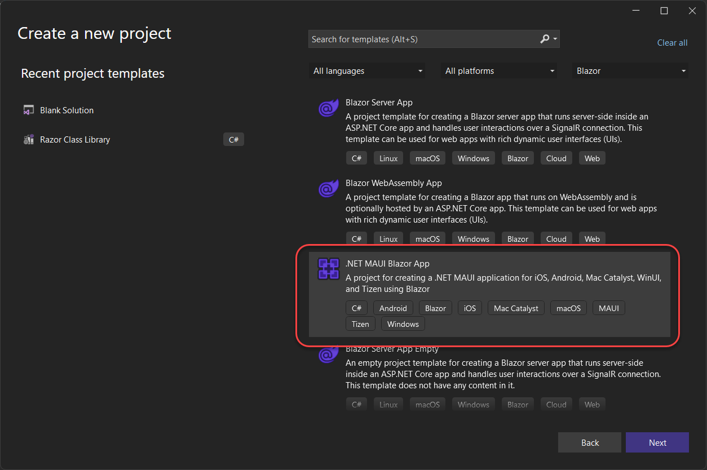
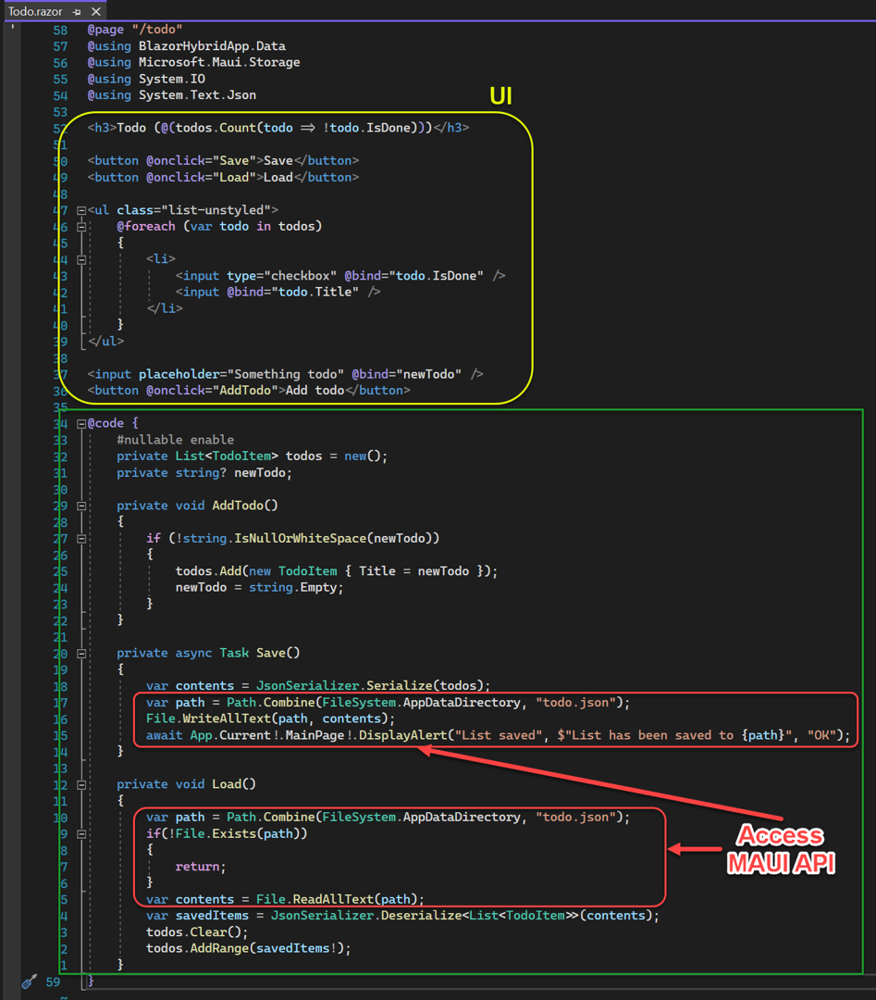
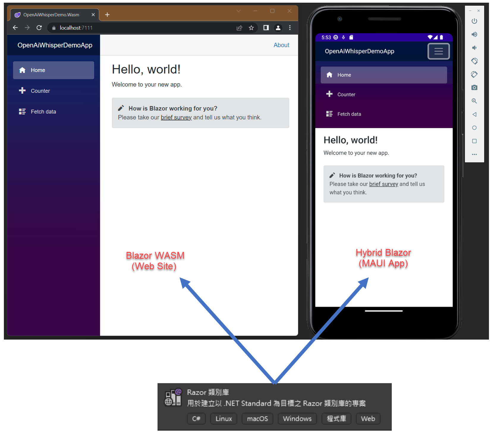

Blazor寫一次就討好
Web ＆ App 開發
老鮑伯
Agenda
- Blazor Introduction
- WebRTC demo project
Blazor Introduction
What is (ASP.NET Core) Blazor
Singla Page Application(SPA) frammework for building interactive client-side web UI using .NET Core/5+ C# without “too much” client-side JavaScript.
- Component-based architecture
- Different hosting models:
- Blazor WebAssembly (Blazor WASM)
- Blazor PWA (Progressive Web App)
- Blazor Hybrid
- Blazor Server
- United in .NET 8 : static server rendering, streaming rendering, interactive rendering(prerender)
- Blazor WebAssembly (Blazor WASM)

Razor components
A self-contained chunk of user interface (UI), such as a page, dialog, or form.
Includes HTML markup and the processing logic required to inject data or respond to UI events.
- using
.razorfile extension:- (Optional) routing tag helpers (
@page) or@layoutdirective @using,@implements,@inherits,@injectfor C# lang syntax and DI- Razor syntax code to present HTML & Razor components (may mixed C# code)
@codeblock for C# code
- (Optional) routing tag helpers (
Razor components example
@page "/fetchdata"
@using BlazorWasmAppDemo.Shared
@inject HttpClient Http
<PageTitle>Weather forecast</PageTitle>
<h1>Weather forecast</h1>
<p>This component demonstrates fetching data from the server.</p>
@if (forecasts == null)
{
<p><em>Loading...</em></p>
}
else
{
<table class="table">
<thead>
<tr>
<th>Date</th>
<th>Temp. (C)</th>
<th>Temp. (F)</th>
<th>Summary</th>
</tr>
</thead>
<tbody>
@foreach (var forecast in forecasts)
{
<tr>
<td>@forecast.Date.ToShortDateString()</td>
<td>@forecast.TemperatureC</td>
<td>@forecast.TemperatureF</td>
<td>@forecast.Summary</td>
</tr>
}
</tbody>
</table>
}
@code {
private WeatherForecast[]? forecasts;
protected override async Task OnInitializedAsync()
{
forecasts = await Http.GetFromJsonAsync<WeatherForecast[]>("WeatherForecast");
}
}Tip
- Component can consist other child components, and control via “Parameters”
- Component can be nested, reused, shared among projects
- A component can be made very easily then other traditional UI frameworks
CSS isolation for components
A “scoped” CSS file ( .razor.css ) can be added to a component to provide isolated CSS only for it.
Support CSS Variables, so we can programmatically change CSS style in C# code.
Button.razor.css
Button.razor
<button style="--btn-width:@CssAttributes.Width;
--btn-height:@CssAttributes.Height;
--btn-fontSize:@CssAttributes.FontSize;
--btn-foreground:@CssAttributes.ForegroundColor;
--btn-background:@CssAttributes.BackgroundColor;"
@onclick="MouseClick">
@Content
</button>
@code {
[Parameter]
public ButtonStyle CssAttributes { get; set; } = null!;
/* other code */
}DemoBlazorDynamicCss example project
Data binding
- One-way data binding
- Two-way data binding
- Event binding
Event binding example
Routing and Layouts
- For Browser’s Url routing, using
@pagedirective - Kebab-case naming convention
- Provide a mechanism to show common error page when routing to a non-existing page
<Router AppAssembly="@typeof(App).Assembly">
<Found Context="routeData">
<RouteView RouteData="@routeData" DefaultLayout="@typeof(MainLayout)" />
<FocusOnNavigate RouteData="@routeData" Selector="h1" />
</Found>
<NotFound>
<PageTitle>Not found</PageTitle>
<LayoutView Layout="@typeof(MainLayout)">
<p role="alert">Sorry, there's nothing at this address.</p>
</LayoutView>
</NotFound>
</Router>Dependency injection
- Use the
@injectdirective to inject services into components. - Co-operate with the .NET Core DI container.
var builder = WebAssemblyHostBuilder.CreateDefault(args);
/* other builder config code*/
builder.Services.AddScoped(sp =>
new HttpClient { BaseAddress = new Uri(builder.HostEnvironment.BaseAddress) });
builder.Services.AddScoped<IPlatformInfo, PlatformInfo>();
builder.Services.AddScoped<BrowserService>();
await builder.Build().RunAsync();JavaScript interop
- Call JavaScript function from .NET method
- Call .NET method from JavaScript function
- Using
[JSImport]/[JSExport]attribute in Blazor WASM(.NET 7+)
Blazor Hybrid on .NET MAUI
- The Blazor Hybrid can run on .NET MAUI(Multi-platform App UI) / WPF / Winform Native apps.
- We can use the same Blazor source code to build Web and App.(Reusable UI)

The Power of Blazor Hybrid on .NET MAUI is that we can call .NET MAUI API from Blazor @code block.

Reuse UI for Web & App via RCL
By using Razor Class Library(RCL) to share UI components between Web and App.

Project setup
- 建立MAUI (with Hybrid Blazor)專案
- 建立RCL(Razor Class Library)專案，並將其加入MAUI專案的專案引用(Project Reference)
- 將MAUI專案中Blazor相關目錄&檔案搬移到RCL專案中
- 修改還留在MAUI專案中的必要Blazor所需檔案內容，包括網頁靜態資源引用路徑、Blazor路由元件增加”AdditionalAssemblies”屬性設定
- 啟動MAUI專案驗證功能是否正常
- 用Visual Studio 2022專案精靈建立WASM Blazor專案及配套來跑的asp.net core測試後端
- 將RCL專案加入到WASM Blazor專案的專案引用
- 搬移WASM Blazor專案與Razor頁面相關之目錄＆檔案，與RCL專案中既有的合併
- 修改還留在WASM Blazor專案中的必要Blazor所需檔案內容，包括網頁靜態資源引用路徑、Blazor路由元件增加”AdditionalAssemblies”屬性設定
- 個別啟動WASM Blazor、MAUI專案，驗證功能均可正常運作
WebRTC demo project
Project structure
Conclusion
Reference
- ASP.NET Core Blazor
- Introduction to WebRTC protocols
- Udemy - AspNetCore Blazor:The Big Picture
- MS Learn - Build web applications with Blazor